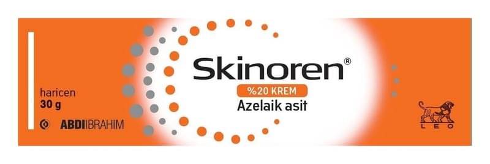

Skinoren %20 Krem, 30 g

Ne için kullanılır
KT · Bölüm 1•S KİNOREN’in 1gramı 200 mg azelaik asit içerir, SKİNOREN akne (sivilce) ve melazma tedavisinde kullanılan bir krem olup, 30g’lık ambalajlar şeklinde sunulmuştur. •S KİNORE N sivilce oluşumunda önemli rol oynayan bakteriye karşı (Propionibacterium acnes) etkilidir. Cilt gözeneklerini tıkayan pürüzlü ve sertleşmiş cilt hücrelerinin büyümesini ve böylelikle siyah ve beyaz noktaların oluşmasını engeller. SKİNOREN ayrıca melazma tedavisinde de kullanılır.
Kırmızı: Sayın Bakanlığımız’ın 28.03.2017 tarih ve E 69775 sayılı yazısı gereğince yapılan düzenlemeler amacıyla yapılan
SKİNOREN melazma olarak bilinen cildin pigmentasyonunun (renginin) koyulaşmasına sebep olan anormal melanosit hücrelerinin (deriye rengini veren maddeyi üreten hücreler) büyümesiyle ve yaşayabilirliğiyle mücadele eder.